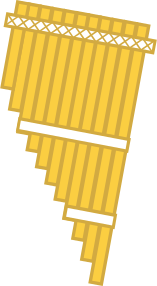
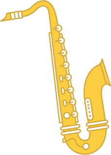
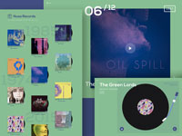

Since 1979
Learn how Tempo has become the leading music production and review hub in the history of mankind.
Read our storyThe Hub
Explore how Tempo has helped thousands of artist find their perfect equipment & get connected.
Join the hubSince 1979
Learn how Tempo has become the leading music production and review hub in the history of mankind.
Read our storyThe Hub
Explore how Tempo has helped thousands of artist find their perfect equipment & get connected.
Join the hubStrings
Mahogany and maple, Guarneri del Gesu and Stradivari: Welcome to the world of high-quality strings.
ExploreAnd More
From tubas to saxophones and other excellent musical friends, we have them all.



If you enjoyed this demo you might also like:

Above & Beneath
Interactive Record Player